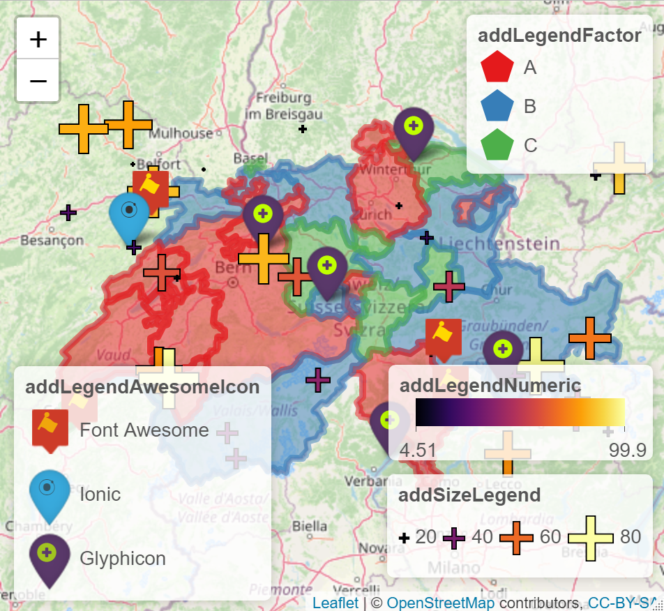

This package provides extensions to the leaflet package to customize leaflet legends without adding an outside css file to the output to style legends. The legend extensions allow the user to add images to legends, style the labels of the legend items, change orientation of the legend items, use different symbologies, and style axis ticks. Syntax and style is consistent with the leaflet package. Helper functions are provided to create map symbols for plotting as well.
Installation
You can install the released version of leaflegend from CRAN with:
install.packages("leaflegend")Install the development version with:
devtools::install_github("tomroh/leaflegend")Example
Use addLegend*() to create easily customizable legends for leaflet.
library(leaflet)
library(leaflegend)
set.seed(21)
data("gadmCHE")
gadmCHE@data$x <- sample(c('A', 'B', 'C'), nrow(gadmCHE@data), replace = TRUE)
factorPal <- colorFactor(c('#1f77b4', '#ff7f0e' , '#2ca02c'), gadmCHE@data$x)
n <- 10
awesomeMarkers <- data.frame(
marker = sample(c('Font Awesome', 'Ionic', 'Glyphicon'), n, replace = TRUE),
lng = runif(n, gadmCHE@bbox[1,1], gadmCHE@bbox[1,2]),
lat = runif(n, gadmCHE@bbox[2,1], gadmCHE@bbox[2,2])
)
n2 <- 30
symbolMarkers <- data.frame(
x = runif(n2, 0, 100),
y = runif(n2, 10, 30),
lng = runif(n2, gadmCHE@bbox[1,1], gadmCHE@bbox[1,2]),
lat = runif(n2, gadmCHE@bbox[2,1], gadmCHE@bbox[2,2])
)
numericPal <- colorNumeric(hcl.colors(10, palette = 'zissou'),
symbolMarkers$y)
iconSet <- awesomeIconList(
`Font Awesome` = makeAwesomeIcon(icon = "font-awesome", library = "fa",
iconColor = 'rgb(192, 255, 0)',
markerColor = 'lightgray',
squareMarker = TRUE, iconRotate = 30
),
Ionic = makeAwesomeIcon(icon = "ionic", library = "ion",
iconColor = 'gold', markerColor = 'gray',
squareMarker = FALSE),
Glyphicon = makeAwesomeIcon(icon = "plus-sign", library = "glyphicon",
iconColor = '#ffffff',
markerColor = 'black', squareMarker = FALSE)
)
leaflet() |>
addTiles() |>
addPolygons(data = gadmCHE, color = ~factorPal(x), fillOpacity = .5,
opacity = 0, group = 'Polygons') |>
addLegendFactor(pal = factorPal, shape = 'polygon', fillOpacity = .5,
opacity = 0, values = ~x, title = 'addLegendFactor',
position = 'topright', data = gadmCHE, group = 'Polygons') |>
addAwesomeMarkers(data = awesomeMarkers, lat = ~lat, lng = ~lng,
icon = ~iconSet[marker],
group = 'Awesome Icons') |>
addLegendAwesomeIcon(iconSet = iconSet, title = 'addLegendAwesomeIcon',
position = 'bottomleft',
group = 'Awesome Icons') |>
addSymbolsSize(data = symbolMarkers, fillOpacity = .7, shape = 'plus',
values = ~x, lat = ~lat, lng = ~lng, baseSize = 20,
fillColor = ~numericPal(y), color = 'black',
group = 'Symbols') |>
addLegendSize(pal = numericPal, shape = 'plus', color = 'black',
fillColor = 'transparent', baseSize = 20, fillOpacity = .7,
values = ~x, orientation = 'horizontal',
title = 'addSizeLegend', position = 'bottomright',
group = 'Symbols', data = symbolMarkers) |>
addLegendNumeric(pal = numericPal, values = ~y, title = 'addLegendNumeric',
orientation = 'horizontal', fillOpacity = .7, width = 150,
height = 20, position = 'bottomright', group = 'Symbols',
data = symbolMarkers) |>
addLayersControl(overlayGroups = c('Polygons', 'Awesome Icons', 'Symbols'),
position = 'topleft',
options = layersControlOptions(collapsed = FALSE))